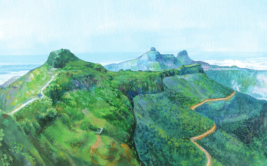
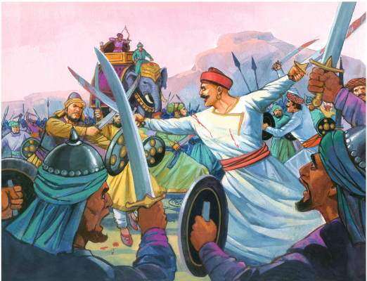

THE BATTLE OF PAVANKHIND

In 1660, amidst the tumult of the Maratha-Adilshahi conflict, Shivaji
Maharaj faced a daunting challenge: the overwhelming might of the
Adilshahi forces. Recognizing the peril of direct confrontation,
Shivaji devised a plan to outwit his adversaries. He entrusted the
defense of the narrow pass of Pavankhind to his loyal general, Baji
Prabhu Deshpande, whose unwavering courage and steadfast resolve would
soon be put to the ultimate test.
As the Adilshahi army descended upon Pavankhind, Baji Prabhu and his
small band of warriors stood as a bulwark against the enemy's advance.
Despite being vastly outnumbered, they fought with unparalleled bravery,
holding their ground against wave after wave of enemy assaults. Their
determination and sacrifice bought precious time for Shivaji and the
main Maratha force to safely retreat through the narrow pass, ensuring
the survival of their resistance against tyranny

Though Baji Prabhu and many of his comrades fell in the heat of
battle, their legacy endured as a testament to the courage and
sacrifice of the Maratha warriors. The Battle of Pavankhind stands as
a timeless example of valor and heroism, forever etched in the annals
of Indian history, inspiring generations with its tale of unwavering
loyalty and indomitable spirit